유료강의 듣지마세요. 해외반응 유튜브 구독자 0명으로 월300만원 버는 법 다 알려드림 (26년 최신판)
🎙️ 자막 대신 영상 음성을 받아써서 정리 (ko (음성 받아쓰기·GPU))
▶ 원본 영상 보기한눈에 보기
- 해외반응 유튜브는 외국인이 한국 문화를 경험하는 영상을 가져와 나레이션과 자막을 붙이는 채널이다. 얼굴을 드러내거나 직접 촬영할 필요가 없다.
- 핵심은 "명당"(잘 팔리는 주제)을 찾는 것이다. 구독자는 적은데 조회수가 10만 회를 넘은 영상만 레퍼런스로 삼고, 거기서 딱 10%만 바꿔서 만든다.
- 제작은 7단계로 진행한다: 채널 개설 → 알고리즘 길들이기 → 썸네일 각 잡기 → 대본 작성(AI) → 재료 3가지 모으기 → 캡컷 편집 → 48시간 데이터 분석.
- 썸네일은 업로드 후 48시간 동안의 클릭률로 판단한다. 10% 이상이면 그대로 두고, 8~10%면 지켜보고, 8% 미만이면 교체한다(영상 속 기준).
- 영상 끝 6분은 편집을 자동화하는 유료 AI 프로그램 홍보다. 대본 프롬프트와 소재 100개 목록도 댓글이나 무료 강의를 신청해야 받을 수 있다.
이런 분께 도움이 됩니다
- 얼굴 공개나 촬영 없이 조회수 수익형 유튜브를 시작해 보려는 왕초보
- 소재 찾기부터 Vrew·CapCut 편집, 유튜브 스튜디오 분석까지 전체 작업 흐름을 한 번에 보고 싶은 분
핵심 내용
강사 소개와 수익 주장 (3:21)
- 러시아에서 여행 가이드로 일하다 코로나로 실직했다. 2020년 6월 10일부터 축구 영상 6개를 올렸지만 조회수는 대부분 십몇 회, 가장 많이 나온 것이 백몇 회여서 접었다.
- 요식업도 망해 빚이 1억 원을 넘은 상태에서 아이가 생기자 유튜브를 다시 시작했다. 윤여정 배우의 오스카 수상 해외반응 영상이 터지면서 첫 달에 약 1,000만 원을 벌었다고 한다.
- 영상에서 제시한 근거
- 2025.5.26~8.25 계좌 입금 2억 4,400만 원, 같은 기간 외화매입증명서 178,767달러(국민은행)
- 국세청 부가세 과세표준 기준 누적 약 18억 660만 원, 2026년 상반기 4억 30만 원
- 운영 6년차, 채널 10여 개, 누적 구독자 258만 명
💡 열심히 만드는 것보다 잘 터지는 주제를 고르는 것이 중요하다는 것이 이 영상 전체의 결론이다.
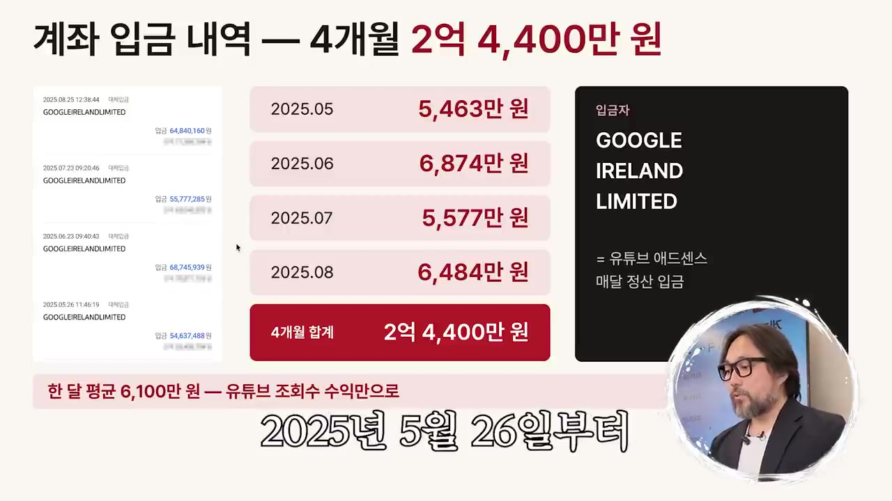
왜 지금 '해외반응'인가 (9:28)
- 고점이 높다: 4개월에 2억 원 이상을 벌었다고 한다.
- 오래 간다: 6년째 월 3,000만~5,000만 원을 유지하고 있다고 주장한다.
- 소재가 끝없이 생긴다: 외국인이 계속 한국을 찾고, 청계천 하나만 해도 미국인·스페인인·프랑스인 영상이 올라온다. 최근 트렌드 예시로는 뉴욕의 곰탕 줄서기를 들었다.
- 명당 사례: 윤여정 명당 하나로 1,000만 원 이상을 벌었다. 손흥민 첫 영상이 200만 회를 넘어 영상 하나로 수익 창출 조건을 채웠고, 한 달간 손흥민 영상 8개로 2,000만 원 이상을 벌었다고 한다.
| 소재("코인") | 조회수 | 수익 |
|---|---|---|
| 태권도(미국 도장) | 53만 | 약 111만 원 |
| 한국 문화 | 74만 | 305만 원 |
| BTS | 38만 | 129만 원 |
| 한국 스포츠(최근) | 27만 | 23만 원(자막상 불분명) |
- 태권도 영상은 원본 영상에 음악을 깔고 흐름대로 설명만 붙였다고 한다.
- 수강생 사례로 유튜브를 전혀 모르던 피자집 사장님이 월 1,500만 원, 누적 약 1억 2,000만 원을 벌고 있다고 소개했다(16:35).
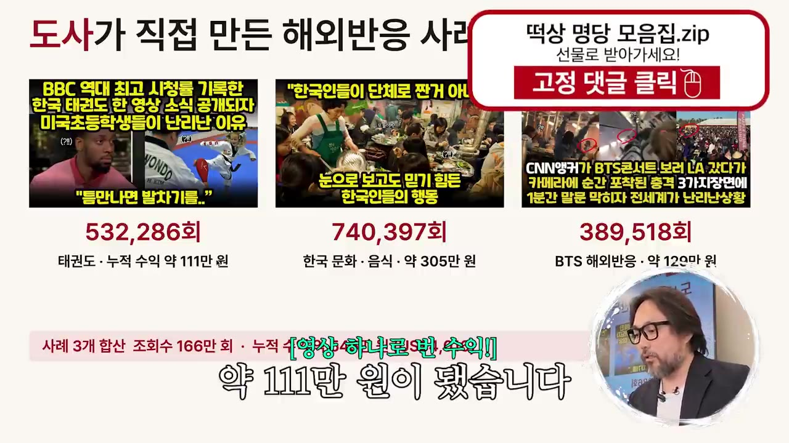
무조건 지켜야 할 3원칙 (17:50)
| 원칙 | 내용 |
|---|---|
| ① 검증된 레퍼런스만 | 구독자 2,000명에 30만 회 나온 영상이 검증된 소재다. 구독자 50만 명에 30만 회는 검증된 소재가 아니다. |
| ② 새로운 것 금지, 10%만 변경 | 잘된 소재 안에서 조금씩만 바꾼다. 예: 윤여정 오스카 수상 → 입은 옷 → 미국 연예인의 반응 |
| ③ 편집에 힘주지 않기 | 화려한 편집 대신 자막과 나레이션에만 신경 쓴다. |
💡 초보가 실패하는 이유는 "돈 될 것 같은" 새 주제를 찾기 때문이다. 시청자는 익숙한 것을 좋아한다.
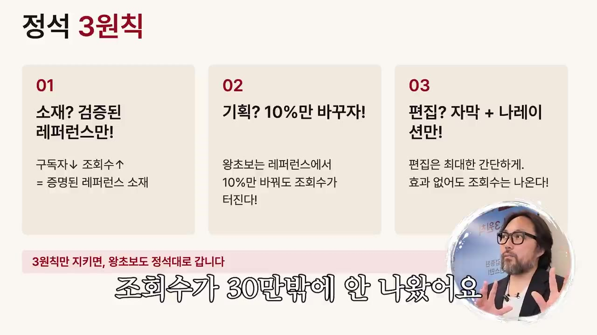
썸네일 각 잡기, 10% 법칙 (29:47)
- 이미 관심이 검증된 소재에 새로운 포인트 하나(10%)를 얹는 것이다.
- 예시
- 윤여정: 의상, 만난 사람 등 여러 소식 가운데 "윤여정이 보여 준 한국인만의 습성"을 잡아 20만 회
- 갓탤런트: 태권도 공연으로 우승한 장면
- 안젤리나 졸리: 손목에 있는 한글 사인
- 같은 한국 반응이라도 포인트가 다르면 다른 영상이 된다. 해 보면서 실력이 는다고 했다.
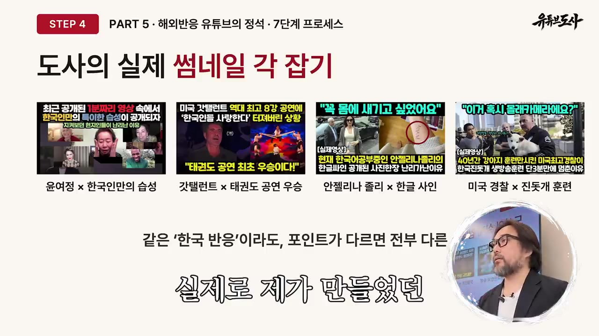
업로드 후 48시간 분석과 썸네일 교체 기준 (46:55)
- 유튜브 스튜디오 분석 탭에서 기간(28일·90일·1년)별 조회수, 시청시간, 구독자, 수익을 확인한다.
- 강사 채널 예시: 28일 동안 797만 회, 예상 수익 약 6,000달러
- 강사가 보여 준 "5시간 전 업로드" 영상의 지표
| 지표 | 수치 | 의미 |
|---|---|---|
| 조회수 | 7만, 우상향 중 | 그래프가 꺾이면 썸네일 교체를 고려한다 |
| 시청시간 | 2,900시간 | — |
| 노출수 | 16만 | 썸네일이 노출된 횟수 |
| 노출 클릭률(CTR) | 14.6% (처음엔 19%) | 자리 잡은 채널이라 높은 수치라고 함 |
| 평균 시청 지속시간 | 13분 영상 중 5분 | 조회 1회당 단가를 결정한다고 주장 |
- 초보 해외반응 채널의 클릭률 기준
| 노출 클릭률 | 조치 |
|---|---|
| 10% 이상 | 좋은 신호이니 그대로 둔다 |
| 8~10% | 일단 지켜본다 |
| 8% 미만 | 썸네일을 교체한다 |
- 조회수가 안 나올 때는 CTR, 지속률, 썸네일과 내용의 일치 여부, 시장성을 점검해 썸네일을 바꾼다.
- 포기하지 말 것: 1~3번째 영상에서 멈추지 말고 계속 올린다. 한 영상이 터지면 이전 영상들의 조회수도 함께 끌어올린다. 강사는 "4번째 영상이 터진다"는 말을 상징적인 표현으로 썼다.
💡 업로드 후 48시간이 유지·관망·교체를 결정하는 골든타임이다.
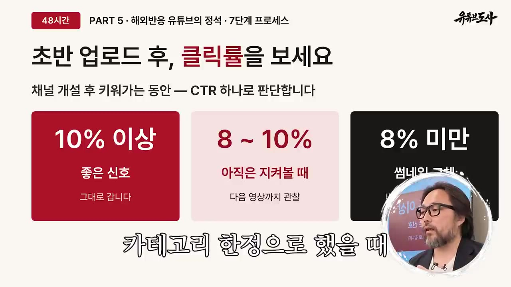
자동화 AI 프로그램 홍보 (53:15)
- 수작업으로 약 6시간 걸리는 과정을 10분으로 줄인다고 주장하는 강사의 자체 프로그램이다.
- 해외 원본 찾기
- 등급 추천
- 제작 시작
- AI 나레이션
- 화면 소재 수집
- 영상 완성
- 1해외 원본 찾기
Korea travel vlog,Seoul vlog,first time in Korea같은 키워드를 넣고 수집한다. 영어 키워드는 GPT로 번역한다. (54:40) - 2등급 추천
터질 가능성에 따라 영상을 A·B·C 등급으로 나눠 준다. A등급에서 고른다.
- 3제작 시작
원본 다운로드, 자막·타임스탬프 추출, 썸네일용 대표 화면 10장 추천, 대본 생성까지 진행된다. (55:26)
- 4AI 나레이션
버튼 하나로 음성을 생성한다. (56:17)
- 5화면 소재 수집
문단마다 배경 영상을 자동으로 내려받는다.
- 6영상 완성
시연에서는 9분짜리 영상이 자동으로 완성됐다. (57:38)
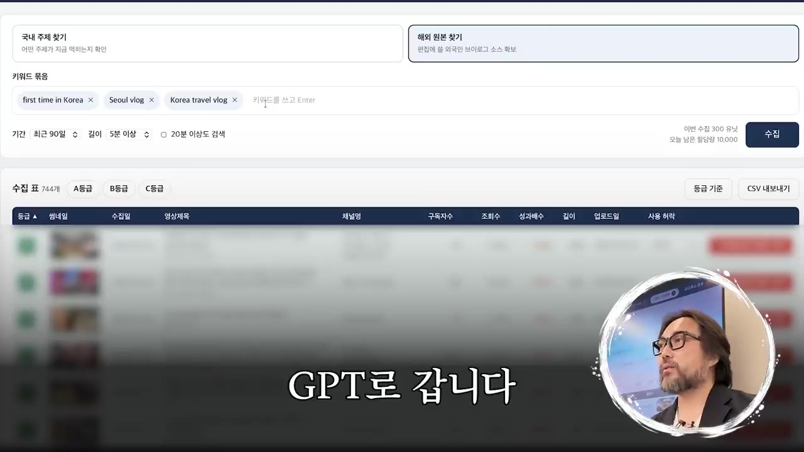
- 가격이나 구매 조건은 영상에 나오지 않는다. 고정 댓글 링크의 무료 강의에서 안내한다고 한다.
따라 해보기
준비물
- 크롬 브라우저, 새 구글 계정(또는 시크릿 창에서 로그인할 계정)
- ChatGPT: 채널명 추천과 로고 이미지 생성. 이미지 생성 기능을 쓸 수 있어야 한다.
- Claude: 대본 작성용. 강사는 Opus를 추천했다. 강사의 '도사 프롬프트'는 댓글이나 무료 강의를 통해 받아야 한다.
- Vrew(자막상 "부류"): AI 나레이션 음성과 자막 파일 생성
- 4K Video Downloader: 원본 영상 다운로드
- Pexels(자막상 "픽셀즈"): 무료 배경 영상·사진
- CapCut(PC): 편집
- 소요 시간: 강사 말로는 영상 1개에 약 6시간(수작업 기준)
단계별 방법
- 채널명 정하기
- 로고 만들기
- 시크릿 창 열기
- 채널 만들기
- 검색과 필터
- 노다지 채널 구독
- 30~50개 구독
- 1채널명 정하기
GPT에 채널명 20개를 추천받는다. 해외반응 채널임이 바로 드러나는 이름을 고른다(예: "외국인의 눈"). (20:06)

GPT에 해외반응 채널명 20개를 요청하는 단계 · ▶ 20:27 - 2로고 만들기
GPT '이미지 생성'에 아래 문장을 입력한다. 결과를 다운로드해 그대로 쓴다. 채널명과 로고는 5분 안에 끝낸다.
- 3시크릿 창 열기
크롬 오른쪽 위 점 3개 → '새 시크릿 창'. 알고리즘이 오염되지 않은 상태에서 시작하기 위해서다. (22:40)
- 4채널 만들기
유튜브에 로그인 → '채널 만들기' → 이름 입력(핸들은 그대로 둔다) → 사진에 로고 넣기 → 만들기.
- 5검색과 필터
"해외 반응" 또는 "외국인 반응"으로 검색 → 오른쪽 위 '필터' → '인기도'로 정렬. (23:50)
- 6노다지 채널 구독
한국 문화를 경험한 외국인의 반응을 다룬 영상 중 구독자는 적은데 조회수가 높은 채널을 찾아 채널 페이지에서 인기순으로 확인하고 구독한다.
- 예: 생생반응(구독자 2만, 221만·98만·83만 회), 한국 찐반응(구독자 3만, 131만·130만·110만 회)
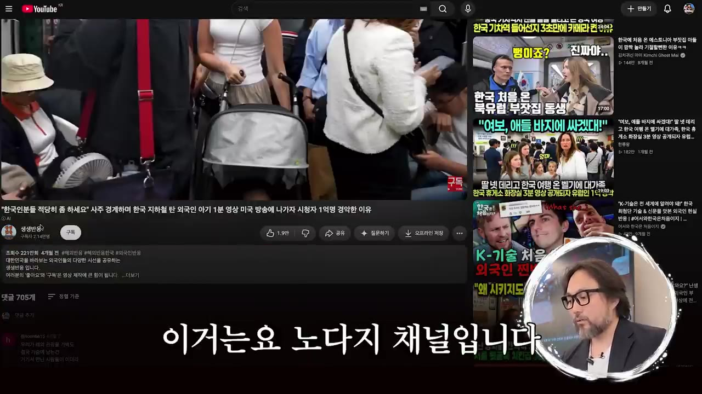
구독자 2만인데 221만 회가 나온 채널을 확인하는 단계 · ▶ 24:44 - 730~50개 구독
이 정도 구독하면 길들이기가 끝난다. 2개만 구독해도 홈 화면에 명당 소재가 뜨기 시작했다. (25:28)
2단계에 입력할 내용 (로고)
유튜브 채널로고를 만들려고 해. 외국인의 눈이라는 채널이야. 한국 문화를 경험한 외국인의 반응을 소개하는 채널이야. 알맞게 만들어줘.
1단계에 입력할 내용 (채널명)
나 해외 반응 유튜브 시작하려고 해. 채널명 20개 추천해줘.
- 명당 영상 고르기
- 출처 확인
- 원본 채널 찾기
- 10% 포인트 정하기
- 1명당 영상 고르기
홈 화면에서 조회수 10만 회 이상인 영상만 명당으로 본다. 업로드 직후라 조회수가 낮은 영상(예: 이틀 전 207회)은 건너뛰고, 182만·61만 회처럼 가장 높은 것을 연다. (26:40)
- 2출처 확인
영상 왼쪽 위나 설명란 '더보기'에 원본 출처가 적혀 있다.
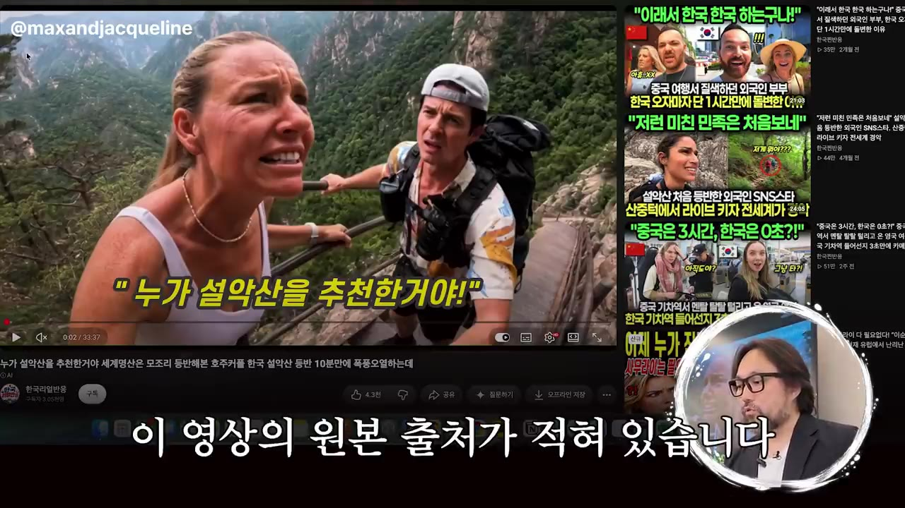
영상 좌측 상단에 표시된 원본 출처를 확인하는 단계 · ▶ 27:34 - 3원본 채널 찾기
출처를 복사해 유튜브에서 검색하면 원본 영상이 나온다(예: 설악산 등반 영상). 이 원본 채널이 앞으로의 소재 창고가 된다.
- 410% 포인트 정하기
같은 소재에서 새 포인트 하나를 잡아 썸네일과 제목의 각을 정한다. (29:47)
- 스크립트 추출
- 출신 확인
- 프롬프트 입력
- 결과 확인
- 1스크립트 추출
원본 영상 설명 '더보기' → 맨 아래 '스크립트 표시' → 전체 스크립트를 복사한다. 영어든 한국어든 상관없다. (32:10)
- 2출신 확인
원본 설명란에 적힌 출신 국가를 구글 번역기로 확인한다(예: 호주).
- 3프롬프트 입력
도사 프롬프트에 주제("설악산에 오른 호주 커플"), 원본 링크, 스크립트를 붙여 넣는다. 모델은 Opus를 고른다. (32:50)
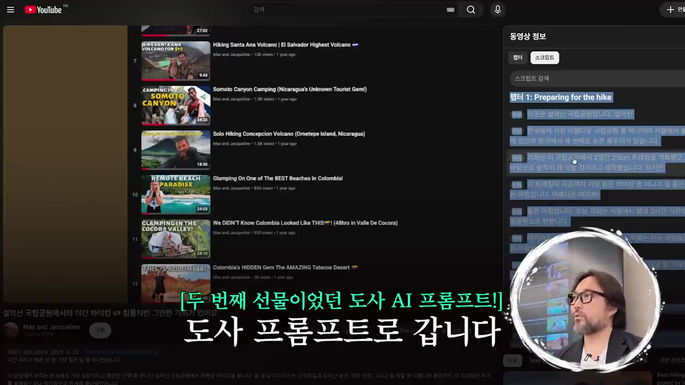
도사 K-콘텐츠 프롬프트에 스크립트와 원본 링크를 넣는 단계 · ▶ 32:44 - 4결과 확인
메인 제목, 후킹 구간 타임코드(예: 원본 16~26초)와 그 자막, 본문 나레이션이 나온다.
- 제목 예: "여긴 천국인가요? 설악산 하나에 말문이 막힌 호주 커플"
- Vrew 나레이션
- 음성·자막 내보내기
- 원본 다운로드
- 배경 영상 받기
- 1Vrew 나레이션
'새로 만들기' → 'AI 목소리로 시작하기' → 나레이션 대본 붙여넣기 → 목소리 선택(강사는 '제피로스') → 확인. (37:19)
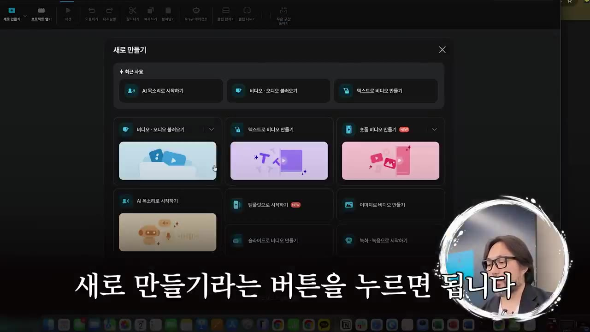
Vrew에서 AI 목소리로 나레이션을 만드는 단계 · ▶ 37:22 - 2음성·자막 내보내기
오른쪽 위 '내보내기' → 오디오: 모든 클립, mp3 / 자막 파일: 한국어. 두 파일의 이름을 같게 맞춘다(예: "설악산 외국인 반응 테스트").
- 3원본 다운로드
4K Video Downloader에서 원본 링크를 복사한 뒤 '링크 붙여넣기'를 누르면 다운로드가 시작된다. (38:47)
- 4배경 영상 받기
Pexels에서 탭을 '동영상'으로 바꾸고 나레이션 문장의 키워드로 검색해 내려받는다(예: "설악산", "단풍"). (44:16)
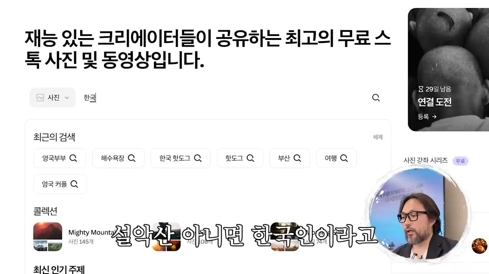
Pexels에서 '설악산' 배경 영상을 검색하는 단계 · ▶ 44:33
💡 원본 영상에 자막만 붙이면 유튜브가 창작물로 인정하지 않아 수익을 받을 수 없다는 것이 강사의 설명이다. 그래서 배경 영상과 나레이션을 따로 넣는다.
- 프로젝트 만들기
- 후킹 구간 자르기
- 음성·자막 넣기
- 후킹 자막 달기
- 배경 영상 배치
- 구간 지정 후 내보내기
- 업로드
- 1프로젝트 만들기
'+'(프로젝트 만들기) → 원본 영상을 타임라인으로 끌어다 놓는다. (39:46)
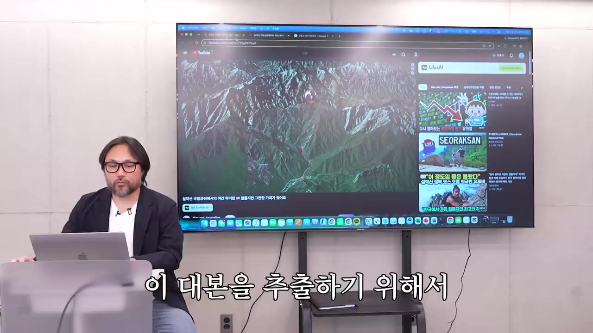
CapCut에 원본 영상을 올리는 단계 · ▶ 40:15 - 2후킹 구간 자르기
오른쪽 줌 슬라이더로 타임라인을 확대한다. 16초 지점에서
B로 자르고 26초 지점에서 다시 자른 뒤 나머지는 지운다. - 3음성·자막 넣기
Vrew에서 받은 mp3와 자막 파일을 후킹 뒤에 넣으면 싱크가 자동으로 맞는다. 필요한 부분만
B로 잘라 후킹 뒤로 옮긴다. - 4후킹 자막 달기
위쪽 '텍스트' → '기본 텍스트'를 끌어다 해당 구간에 놓고 길이를 늘린다. 오른쪽 위 입력창에 대본의 자막을 붙여 넣는다. (42:40)
- 크기를 줄이고 세 줄로 나눈다 → 아래쪽 노란색 스타일 버튼 → '획'을 두껍게 → 위치 조정
- 5배경 영상 배치
나레이션 문장마다 Pexels 영상을 올리고 자막 길이에 맞춘다. (45:14)
- 6구간 지정 후 내보내기
시작점에서
I(인 포인트), 끝점에서O(아웃 포인트, 자막상 "5"로 표기) → 오른쪽 위 '내보내기'. (46:00) - 7업로드
썸네일을 만들어 함께 올린다.
- 분석 탭 열기
- 추이 확인
- 클릭률 확인
- 지속시간 확인
- 썸네일 판단
- 1분석 탭 열기
유튜브 스튜디오 → 해당 영상의 '분석' 아이콘. (47:26)
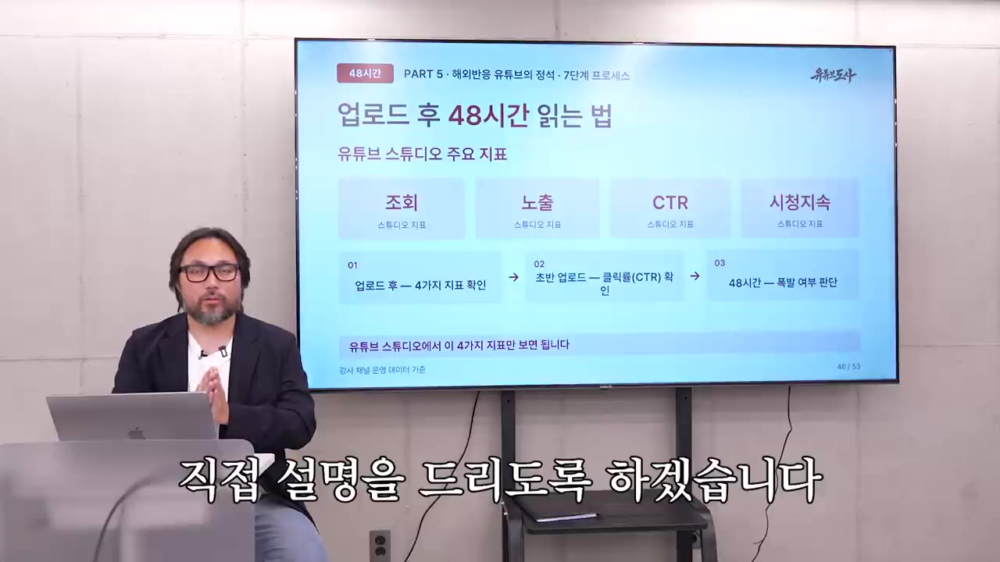
유튜브 스튜디오 분석 탭에서 조회수·시청시간을 보는 단계 · ▶ 47:26 - 2추이 확인
조회수 그래프가 우상향인지 꺾였는지 본다.
- 3클릭률 확인
'도달 범위' 탭에서 노출수와 노출 클릭률을 본다.
- 4지속시간 확인
'참여도' 탭에서 평균 시청 지속시간을 본다.
- 5썸네일 판단
클릭률 8% 미만이면 교체, 8~10%면 관망, 10% 이상이면 유지한다. 48시간 동안 반복해서 확인한다.
따라 할 수 있는지 점검
- ✅ 바로 따라 할 수 있음: 채널명·로고 만들기, 시크릿 창과 채널 개설, 검색·필터와 구독을 통한 알고리즘 길들이기, 원본 출처 추적, 유튜브 스크립트 추출, Vrew 내보내기, 4K Video Downloader 사용, Pexels 검색, CapCut의 B 자르기·텍스트·I/O 내보내기, 스튜디오 클릭률 판단
- ⚠️ 대본 단계 「프롬프트 입력」: 핵심인 '도사 프롬프트' 원문이 영상에 없다. 댓글을 달거나 무료 강의(설명란 changeus.ai 링크)를 신청해야 받을 수 있다. → 받지 못하면 직접 프롬프트를 짜야 한다(보충). 영상 34:00 화면을 참고해 "제목 / 후킹 구간 타임코드 + 자막 / 본문 나레이션" 형식으로 출력하라고 요청하면 된다.
- ⚠️ 1단계 「로고 만들기」: ChatGPT 이미지 생성은 무료 플랜에서 횟수가 제한될 수 있다(보충). Claude Opus 사용에도 유료 요금제가 필요할 수 있다(보충).
- ⚠️ 2단계 「채널 만들기」: 새 구글 계정을 만드는 과정이 생략됐다. 영상에서는 기존 계정으로 로그인한 뒤 새 채널을 만든 것으로 보인다(자막상 불분명).
- ⚠️ 5단계 「Vrew 나레이션」: AI 목소리 사용량 한도와 유료 여부가 언급되지 않았다. → Vrew 공식 사이트 요금제에서 확인한다(보충).
- ⚠️ 6단계 「후킹 자막 달기」: '노란색 버튼'이 어떤 스타일 메뉴인지 이름이 나오지 않는다. → 영상 43:20 화면을 확인한다. 본문 전체 편집은 "시간 관계상" 생략됐고, 인트로만 시연했다.
- ⚠️ 6단계 「업로드」: 썸네일 제작 방법(도구, 디자인)과 업로드 설정(제목, 설명, 출처 표기)이 영상에서 생략됐다.
- ❓ 원본 제작자의 사용 허락이나 출처 표기 같은 저작권 관련 절차는 설명하지 않았다. 인트로에서 "저작권·계정정지 노하우도 알려 준다"고 했지만, 실제로는 배경 영상을 넣어야 한다는 이야기만 했다.
- ❓ 시작 시점이 엇갈린다: "2020년 6월 10일 첫 업로드", "2021년 4월 처음 시작". 첫 달 수익도 60만 원과 1,060만 원으로 다르게 말했다.
확인 방법
- 길들이기 성공 여부: 해당 계정의 유튜브 홈 화면에 구독자는 적은데 조회수 10만 회 이상인 해외반응 영상이 계속 떠야 한다.
- 편집 결과: 내보낸 영상에서 후킹 → 나레이션 순서, 자막과 음성의 싱크, 문장마다 배경 영상이 바뀌는지 확인한다.
- 성과: 업로드 후 48시간 안에 노출 클릭률이 10% 이상인지 본다.
막히면
- 원본 영상에 자막만 붙이지 않는다. 수익 창출이 막힐 수 있으니 배경 영상과 나레이션을 반드시 섞는다.
- 업로드 직후라 조회수가 낮은 영상은 아직 명당이 아니다. 10만 회를 넘은 것만 레퍼런스로 삼는다.
- Pexels가 '사진' 탭으로 열리면 '동영상'으로 바꿔서 검색한다.
- 컷 위치를 잡기 어려우면 CapCut 오른쪽 줌 슬라이더로 타임라인을 확대한다.
- 영상 1~3개 만에 포기하지 말고 계속 올린다.
기억할 숫자·인용
- 2021년 4월 첫 달: 조회수 341만 회, 수익 1,060만 원 / 6개월차: 1,447만 회, 36,846달러(약 5,000만 원)
- 누적 수익 17억 원(국세청 기준 약 18억 660만 원), 2026년 상반기 4억 30만 원
- 명당 기준: 조회수 10만 회 이상, 구독자 대비 조회수가 높은 영상
- 알고리즘 길들이기: 30~50개 채널 구독
- 썸네일 클릭률 기준: 10% 이상 유지, 8~10% 관망, 8% 미만 교체
- 수작업 약 6시간 → 자동화 10분(강사 주장)
- "열심히 한다고 중요한 게 아니라 잘 터지는 주제를 하는 게 중요하다."
생각해볼 점
- 수익은 개인 사례다. 증빙을 보여 줬지만 극히 성공한 사례이고, 피자집 사장님 외에 평균적인 수강생 성과는 나오지 않는다. 영상 자체가 무료 강의를 거쳐 유료 프로그램으로 이어지는 마케팅 구조라는 점도 감안해야 한다.
- 저작권과 재사용 콘텐츠 위험(내 의견, 보충). 남의 브이로그를 내려받아 쓰는 방식은 원 제작자의 저작권 신고나 유튜브의 재사용·반복 콘텐츠 수익화 정책에 걸릴 수 있다. 영상은 "배경 영상을 섞으면 된다" 정도로만 다룬다. 시작하기 전에 유튜브 공식 수익 창출 정책을 직접 읽어 볼 필요가 있다.
- 확인되지 않은 주장이 있다. "시청 지속시간이 조회당 단가를 정한다"는 영상 속 주장이다. "해외반응은 아직 블루오션"이라는 말도 이 영상 같은 강의가 퍼지면서 경쟁이 빠르게 늘었을 수 있다.
바로 해볼 일
- 크롬 시크릿 창에서 "해외 반응"을 검색하고 인기도로 정렬해, 구독자는 적은데 조회수가 높은 채널 5개를 찾아 구독해 보기
- 홈 화면에서 10만 회 이상 나온 영상 하나를 골라 원본 출처를 추적하고, 내가 얹을 "10% 포인트"를 한 줄로 적어 보기
- 유튜브 공식 고객센터에서 '재사용된 콘텐츠' 수익 창출 정책을 읽고, 원본 영상 사용 범위를 미리 정해 두기